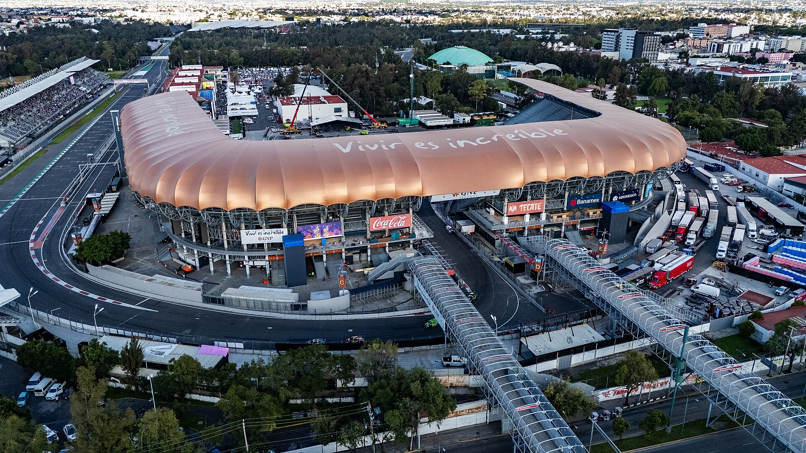

A próxima etapa da Fórmula 1 será disputada entre 30 de outubro e 1º de novembro. A prova representa a 19ª corrida da temporada e acontece em um momento decisivo do campeonato, com Andrea Kimi Antonelli muito próximo de conquistar seu primeiro título mundial pela Mercedes.
Depois de vencer o GP dos Estados Unidos, em Austin, no dia 25 de outubro, o italiano ampliou sua vantagem na classificação e chega ao México podendo assegurar matematicamente a conquista. George Russell, seu companheiro de Mercedes, e Lewis Hamilton, da Ferrari, são os únicos pilotos que ainda possuem chances de impedir o título antecipado.
Mas o interesse pela etapa mexicana vai além da disputa pelo campeonato. O Autódromo Hermanos Rodríguez apresenta características que exigem adaptações importantes dos carros e das equipes. A altitude superior a 2.200 metros modifica o comportamento aerodinâmico, interfere no resfriamento dos componentes e transforma a preparação para o fim de semana em um desafio técnico.
Cronograma do GP
O Grande Prêmio da Cidade do México será realizado no domingo, 1º de novembro de 2026, com largada marcada para as 17h, no horário de Brasília.
A programação começa na sexta-feira, com dois treinos livres, continua no sábado com a última sessão de preparação e a classificação, e termina com a corrida principal no domingo.
Diferentemente das etapas que utilizam o formato sprint, o GP do México terá o modelo tradicional de fim de semana, com três treinos livres e uma única sessão classificatória para definir o grid de largada.
Programação completa:
Sexta-feira, 30 de outubro
- Treino livre 1: 15h30
- Treino livre 2: 19h
Sábado, 31 de outubro
- Treino livre 3: 14h30
- Classificação: 18h
Domingo, 1º de novembro
- Corrida: 17h
Todos os horários são de Brasília e seguem a programação divulgada pela Fórmula 1, sujeitos a alterações pela organização.
No Brasil, o sportv3 transmite os treinos livres, a classificação e a corrida do GP da Cidade do México.
Um circuito diferente dos demais
O Autódromo Hermanos Rodríguez recebe a Fórmula 1 em um traçado de 4,300 quilômetros, com 71 voltas previstas para a corrida.
A distância total oficial da prova é de 305,000 quilômetros. O circuito combina uma extensa reta principal, fortes zonas de frenagem, curvas de média velocidade e uma sequência final que atravessa uma área de arquibancadas conhecida como Foro Sol.
A característica mais conhecida do autódromo é sua localização a mais de dois mil metros acima do nível do mar. Essa condição torna a etapa mexicana diferente de grande parte das corridas disputadas ao longo da temporada.
Por que a altitude interfere tanto
Como a densidade do ar é menor, os carros produzem menos pressão aerodinâmica do que produziriam com a mesma configuração em circuitos próximos ao nível do mar. Isso influencia a aderência nas curvas e o equilíbrio entre velocidade máxima e estabilidade.
As equipes precisam encontrar uma configuração que ofereça apoio aerodinâmico suficiente sem comprometer o desempenho nas retas.
O resfriamento também merece atenção. O ar menos denso dificulta a dissipação de calor, aumentando as exigências sobre os sistemas responsáveis pelo controle das temperaturas dos freios e das unidades de potência.
Outro detalhe importante é a longa distância entre o grid e a primeira frenagem. São aproximadamente 830 metros da pole position até o ponto de frear para a primeira curva, característica que favorece o uso do vácuo e torna a largada especialmente importante.
Por isso, conquistar a pole position representa uma vantagem importante, mas não garante que o piloto permanecerá na liderança depois dos primeiros metros.
Um dos símbolos da corrida mexicana
Um dos trechos mais famosos do Hermanos Rodríguez é a passagem pelo antigo estádio de beisebol, incorporado ao traçado moderno da Fórmula 1.
Nesse setor, os pilotos percorrem curvas de baixa velocidade cercadas por arquibancadas, criando uma atmosfera bastante diferente daquela encontrada nas partes abertas do circuito.
A região também recebe a cerimônia de pódio, tornando-se um dos cenários mais reconhecidos da categoria.
O desenho atual modificou a antiga curva Peraltada, que fazia parte de versões anteriores do circuito. A mudança permitiu que os carros passassem pelo complexo do estádio antes de retornar à reta principal.
Antonelli pode conquistar o título mundial de 2026
A principal disputa esportiva da etapa envolve a definição do Campeonato Mundial de Pilotos.
Kimi Antonelli chega ao México com 365 pontos, depois de conquistar sua nona vitória na temporada no GP dos Estados Unidos.
A classificação dos principais colocados após a corrida de Austin ficou assim:
- 1. Kimi Antonelli (Mercedes) — 365 pontos
- 2. George Russell (Mercedes) — 242 pontos
- 3. Lewis Hamilton (Ferrari) — 241 pontos
- 4. Max Verstappen (Red Bull) — 236 pontos
- 5. Charles Leclerc (Ferrari) — 233 pontos
Com 123 pontos de vantagem sobre Russell, Antonelli depende apenas de terminar o GP do México entre os nove primeiros para assegurar o título, independentemente do resultado dos concorrentes.
Mesmo que não alcance essa posição, o italiano poderá conquistar o campeonato mediante uma combinação favorável de resultados.
Caso confirme a conquista, Antonelli se tornará o campeão mundial mais jovem da história da Fórmula 1, superando uma marca que pertence a Sebastian Vettel desde 2010.
A situação dá à corrida mexicana uma importância especial dentro da temporada, embora a prova também seja decisiva para as disputas pelas demais posições do campeonato.
Gabriel Bortoleto representa o Brasil no grid
O brasileiro soma 10 pontos no Mundial de Pilotos de 2026 e chega à corrida em busca de melhorar sua campanha na temporada.
O circuito mexicano impõe desafios particulares para a gestão dos pneus, o equilíbrio aerodinâmico e as frenagens. Para equipes que procuram avançar no pelotão intermediário, a preparação durante os treinos livres e a execução da estratégia podem fazer diferença.
Outro personagem de destaque será Sergio Pérez. O mexicano disputa a temporada pela Cadillac e terá a oportunidade de correr diante de sua torcida.
A presença de Pérez acrescenta um componente local importante a uma corrida que tradicionalmente movimenta um grande público nas arquibancadas.
Os maiores vencedores do GP do México
A história da Fórmula 1 no México começou com uma corrida extra campeonato em 1962. No ano seguinte, o autódromo recebeu sua primeira prova válida pelo Mundial, vencida pelo britânico Jim Clark.
O GP mexicano passou por diferentes períodos de presença e ausência no calendário. Depois de uma longa interrupção, retornou em 2015, inaugurando uma nova fase do evento.
Entre os pilotos que construíram uma história de sucesso no circuito, Max Verstappen ocupa posição de destaque.
O neerlandês é o maior vencedor do GP, com cinco triunfos:
- 2017
- 2018
- 2021
- 2022
- 2023
Na edição de 2025, a vitória ficou com Lando Norris, da McLaren. Charles Leclerc terminou na segunda posição, enquanto Verstappen completou o pódio.
O retrospecto acrescenta interesse à corrida de 2026, reunindo nomes que já demonstraram capacidade de vencer ou alcançar bons resultados em um circuito de características tão particulares.
O que pode decidir a corrida no México
Existem alguns elementos técnicos e estratégicos que ajudam a explicar o comportamento das corridas no Hermanos Rodríguez.
O primeiro é a largada. A extensa aproximação até a primeira curva oferece oportunidades de ultrapassagem e pode modificar a ordem estabelecida na classificação.
O segundo é o desempenho aerodinâmico. Embora a pista tenha longas retas, a necessidade de aderência nas curvas exige uma configuração equilibrada.
O terceiro envolve os pneus. Administrar temperatura, desgaste e aderência será importante para sustentar o ritmo ao longo das 71 voltas.
As equipes também precisam observar a evolução das condições da pista durante o fim de semana. O equilíbrio encontrado nos treinos não necessariamente se repete durante todas as fases da corrida.
Por fim, a estratégia de pit stops pode alterar a disputa, sobretudo quando pilotos de desempenho semelhante escolhem momentos diferentes para realizar suas paradas.
O que vem depois do GP do México
Depois da etapa mexicana, a Fórmula 1 seguirá para o Brasil.
O GP de São Paulo está programado para o período de 6 a 8 de novembro de 2026, em Interlagos.
A corrida brasileira é uma das mais tradicionais do Mundial e possui uma identidade própria, construída por disputas históricas, decisões de campeonato e pela ligação com grandes nomes do automobilismo nacional.
Essa tradição é parte central da história do GP de Interlagos na Fórmula 1, marcada por Ayrton Senna e pelos grandes campeões da categoria.
Após São Paulo, o calendário ainda terá os GPs de Las Vegas, Catar e Abu Dhabi, responsável pelo encerramento da temporada em dezembro.
Um GP que reúne história, técnica e decisão de campeonato
O Grande Prêmio da Cidade do México de 2026 reúne ingredientes que ajudam a explicar sua importância no calendário da Fórmula 1.
O circuito possui uma trajetória histórica iniciada nos anos 1960, apresenta condições aerodinâmicas incomuns e oferece um cenário visual marcante com o setor do estádio.
Além disso, a etapa chega em um momento no qual a disputa pelo Campeonato Mundial pode ser definida antecipadamente.
Para Antonelli, a corrida representa a oportunidade de transformar uma campanha dominante em um título histórico. Para Russell e Hamilton, significa uma das últimas possibilidades de manter a decisão aberta. Já para os demais competidores, o desafio é aproveitar as características do Hermanos Rodríguez para buscar posições e pontos importantes.
Entre a longa reta de largada, os desafios impostos pela altitude e a atmosfera das arquibancadas mexicanas, a Fórmula 1 encontra um palco que exige velocidade, precisão e capacidade de adaptação. É essa combinação que faz do GP do México uma das corridas mais características da categoria, independentemente de quem esteja na liderança do campeonato.